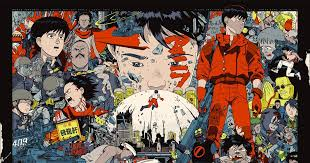

Meu nome é Caio sousa, sou da Zona Oeste de São Paulo, mas
atualmente moro em Limeira. Tenho 21 anos e sou estudante de Sistemas de Informação na Unicamp.
Gosto de aprender coisas novas e estou sempre em busca de novos desafios.
Imagem do meu filme favorito:
